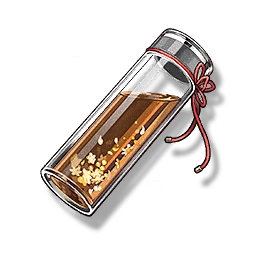

Shuyun Herbal Tea
Supplies

Increases the maximum health of all Resonators in the team by 18% for 30 minutes, only effective for the player's Character in multiplayer games.
Shuyun's ancestral secret herbal tea, most suitable for summer. But the taste is special, and the taste is polarized. The formula is never disclosed, and it is hard to buy. Usually, you can only ask Shuyun to make it.
Sources